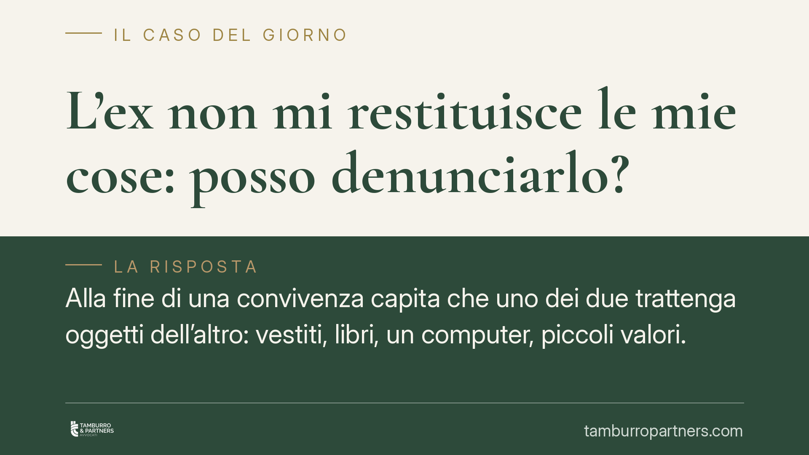

L'ex non mi restituisce le mie cose: posso denunciarlo?
Alla fine di una convivenza capita che uno dei due trattenga oggetti dell'altro: vestiti, libri, un computer, piccoli valori. Quando il rifiuto di restituire diventa reato? Il quadro ruota attorno all'appropriazione indebita (art. 646 cod. pen.) e alla sua procedibilità. Ricostruiamo i presupposti giuridici e cosa serve, sul piano pratico, per far valere le proprie ragioni.

Il caso tipico
Una relazione finisce. Chi lascia l'abitazione comune non sempre riesce a portare via tutto. Capita che l'ex trattenga beni che appartengono all'altro e si rifiuti di restituirli, pur a fronte di richieste reiterate. La domanda ricorrente è se questo comportamento abbia rilievo penale o resti una semplice questione civilistica.
La risposta dipende da come i beni sono finiti nella disponibilità di chi li trattiene e dalla volontà che accompagna il rifiuto di restituirli.
Inquadramento normativo
La norma di riferimento è l'art. 646 cod. pen., che punisce l'appropriazione indebita: chi, avendo già a qualsiasi titolo il possesso di una cosa mobile altrui, se ne appropria per procurare a sé o ad altri un ingiusto profitto. La differenza con il furto è netta: nel furto il possesso viene sottratto; nell'appropriazione indebita il possesso è già legittimo, ma chi detiene decide di comportarsi come se la cosa fosse propria.
Per gli oggetti dell'ex convivente lasciati nell'abitazione comune questo schema si attaglia bene: il possesso era lecito finché durava la convivenza, mentre il rifiuto di restituire, dopo la cessazione del rapporto, può integrare la condotta appropriativa.
Un chiarimento importante riguarda la procedibilità. L'art. 649 cod. pen. disciplina i rapporti tra familiari nei reati contro il patrimonio. Il quadro è stato profondamente modificato dalla Corte costituzionale n. 223/2022 e dal D.Lgs. 150/2022 (riforma Cartabia): oggi non esiste più una generalizzata causa di non punibilità automatica per i fatti commessi tra congiunti. Il regime attuale è prevalentemente di procedibilità a querela, con eccezioni di legge. In altre parole, la condotta resta illecita; ciò che cambia, in molti casi, è che occorre l'impulso della persona offesa.
Sul piano dei rapporti di coppia va poi distinta la posizione del convivente. La L. 76/2016 (art. 1, commi 36-37) definisce la convivenza di fatto come l'unione stabile tra due persone maggiorenni legate da legami affettivi e reciproca assistenza, non vincolate da matrimonio o unione civile, accertabile tramite la dichiarazione anagrafica. Da ciò emerge che il convivente non è automaticamente equiparato al coniuge a ogni effetto penale: le posizioni del coniuge, dell'unito civilmente e del convivente di fatto non coincidono integralmente, e le questioni sulla procedibilità vanno lette alla luce del testo vigente e della giurisprudenza aggiornata, non di automatismi.
Quanto all'aggravante dell'abuso di relazioni di coabitazione (art. 61, c. 1, n. 11, cod. pen.), la sua configurabilità quando la convivenza è ormai cessata non è scontata: l'abuso presuppone che il rapporto che ha agevolato il possesso fosse in atto. Si tratta di un profilo da valutare caso per caso.
Implicazioni pratiche
Per chi si trova a rivendicare i propri beni, tre elementi risultano decisivi.
Il primo è la titolarità del bene: va dimostrato che gli oggetti sono propri (scontrini, fatture, foto, testimonianze, corrispondenza).
Il secondo è il dolo appropriativo: non basta un ritardo o una dimenticanza. Serve una volontà di comportarsi come proprietario, che tipicamente emerge dal rifiuto opposto a una richiesta chiara di restituzione.
Il terzo è la richiesta rimasta senza esito: una domanda formale di riconsegna, documentata, rafforza la posizione di chi agisce e aiuta a distinguere il mero inadempimento dalla condotta penalmente rilevante.
Resta sempre percorribile, in parallelo o in alternativa, la via civile per ottenere la restituzione del bene o il risarcimento.
Cosa fare in concreto
- Raccogli le prove di proprietà di ciascun oggetto: documenti d'acquisto, immagini datate, eventuali testimoni.
- Invia una richiesta scritta di restituzione, con termine e mezzo tracciabile (raccomandata o PEC), conservandone copia.
- Documenta ogni risposta o silenzio: il rifiuto o la mancata reazione sono elementi utili a dimostrare l'intento appropriativo.
- Evita qualsiasi forma di autotutela: rientrare con la forza o sottrarre beni può esporre a responsabilità penale.
- Valuta la via più adatta (querela, azione civile o entrambe) in base alla natura e al valore dei beni e alla documentazione disponibile.
Un chiarimento
Non ogni mancata restituzione è reato: occorre la prova della proprietà, della volontà appropriativa e di una richiesta rimasta senza esito. È opportuno verificare il regime di procedibilità in concreto, perché il quadro successivo alla riforma Cartabia richiede quasi sempre la querela della persona offesa.
Contributo informativo a cura di Tamburro & Partners - Avv. Giuseppe Tamburro. Non costituisce parere legale.
Ogni condominio ha una storia a sé.
Se gestisci un'amministrazione e vuoi un confronto su una specifica questione condominiale, scrivi allo studio. Ti rispondiamo entro un giorno lavorativo.